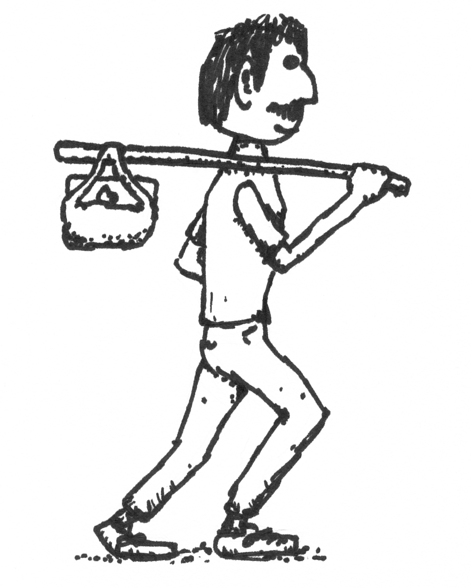
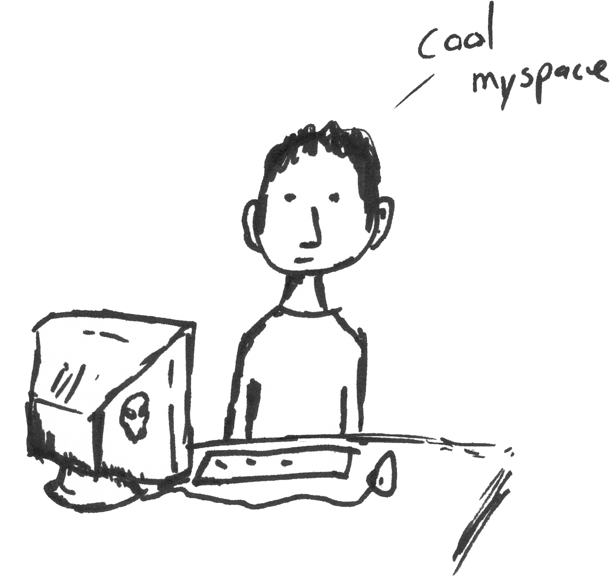
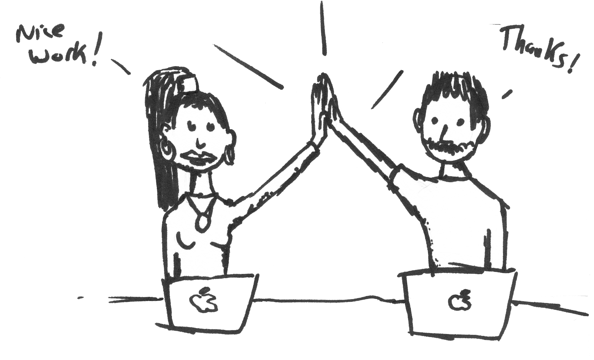
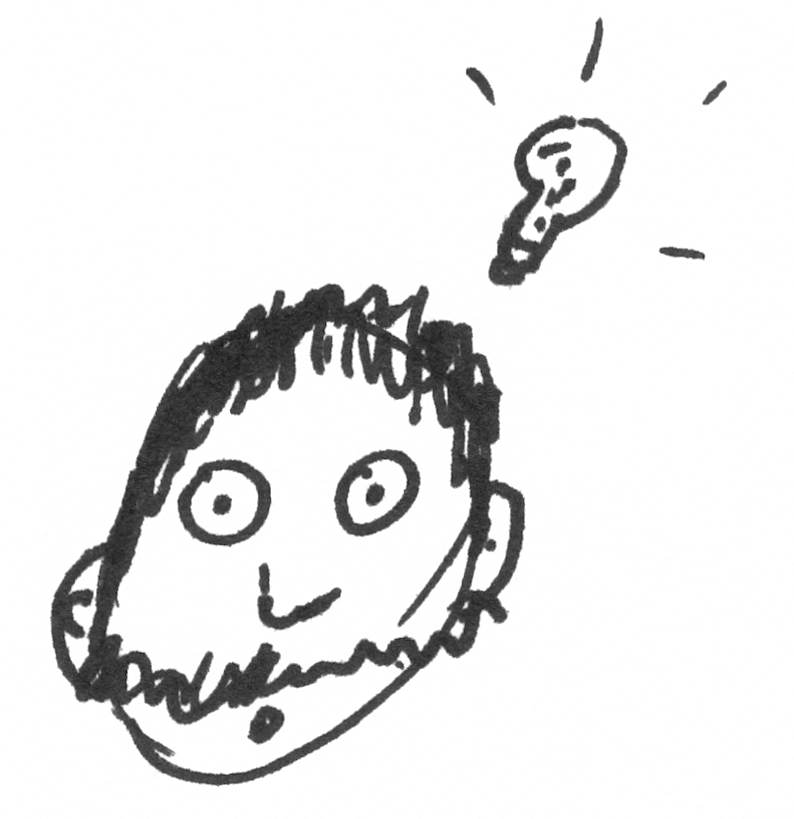
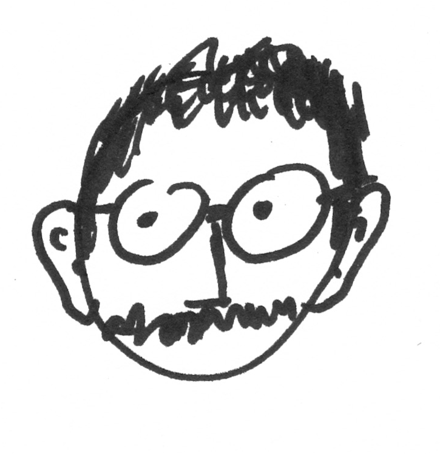
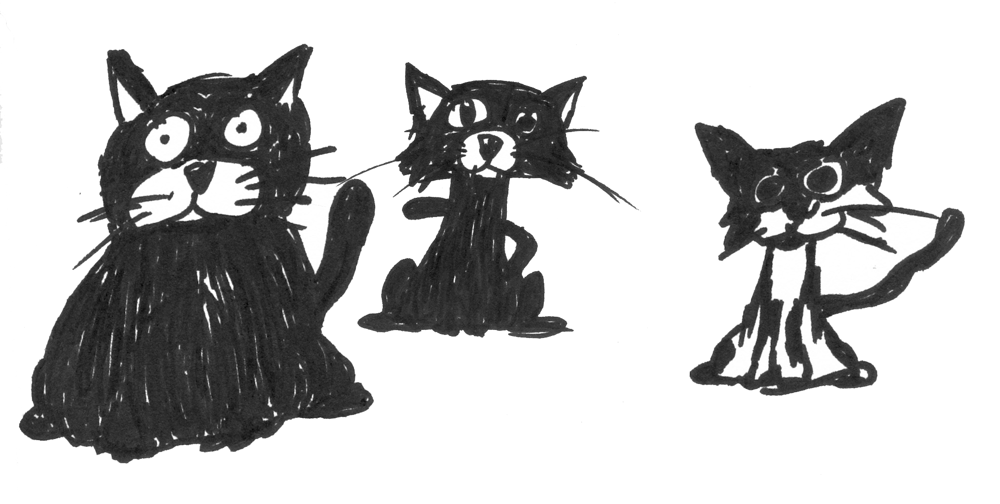

My UX Journey


- Loved to create Myspace pages and customize them.
- Didn't understand what html and img tags were.
- Wished there was something that allowed you to make web pages without knowing how to code.
- Discovered website builders.
- Fell in love with Wix.

- Started building websites.
- Worked at Green Flamingo Design doing illustrations and websites.
- Became really interested in Google Analytics and seeing how long people stayed on the sites and what I could do to make them stay longer.
- Found out the limitations of Wix and that coding wasn't just for computer geniuses.
- Started studying and taking lessons at Treehouse and Thinkful.
- Not only learned how to build web pages but apps too.
- Knew I was on to something great!
- It turned out I spent more time designing than programming.
- A mentor at Thinkful suggested I look into UX Design.

After doing research on UX Design I came to the conclusion that this is what I had to do.
Update

I now have glasses.
